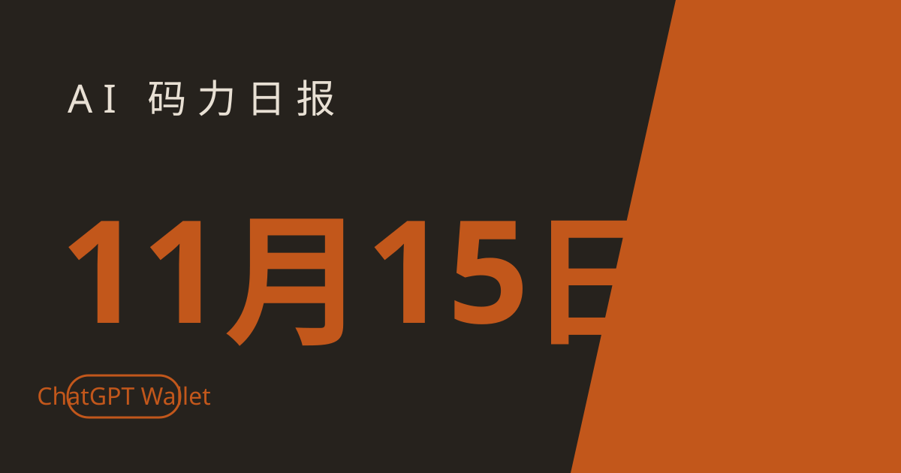

AI 码力日报 · 2026年11月15日

⚡ 一句话速览
- ChatGPT Wallet 上线：OpenAI 的 dots 助手现在能在对话里替你下单买东西，每笔都要你亲自确认，agent 永远看不到你的真实卡号。
- OpenAI 解散机器人团队：通用模型直接控机器人的跑分（74.8%）碾压了专用机器人模型（51.0%），六年内第二次解散机器人团队。
- Anthropic IPO 定价出炉：$70–78/股，11 月 19 日纳斯达克挂牌 ANT，估值最高约 1.4 万亿美元，认购已超 6 倍。
- Cursor 复盘假插件事件：被篡改的 Claude Code 插件 2.1.312/2.1.313 最多波及 5000 人，装过这两个版本的只卸载不够，得按官方指引检查系统。
🤖 今日 AI Coding 动态
OpenAI 推出 ChatGPT Wallet：dots 助手能替你下单买东西了
跟你有啥关系：agent 的角色正在从"帮你查"变成"帮你买"——以后让 dots 找东西，找到合适的它能直接走完结算，你只需要在最后点一下头确认。
11 月 13 日 OpenAI 发布 ChatGPT Wallet，让常驻助手 dots 在对话内完成购物结算。每笔购买都要用户逐笔确认金额、卡片并通过 Face ID 或指纹等安全检查，agent 永远看不到真实卡号——支付网络每次发一个一次性 token 完成扣款。上线初期 0 抽成，与 Amex、Mastercard、Visa 共建。首批仅面向美国 18 岁以上 ChatGPT Pro 用户、逐步放量，且只在 dots 对话内可用，普通对话、Work 模式和独立 Codex 线程暂不支持。完全托管式代购（设好限额、品类后自动买）只在路线图上，未公布时间。原文链接
OpenAI 解散机器人团队，押注 GPT-6 Astra 通用模型直接控机器人
跟你有啥关系：如果你在押注人形机器人赛道，这个信号得重视——连 OpenAI 都认为"通用模型+机器人"这条路走通了，专用机器人模型路线的优先级正在下降。
据 Fortune 11 月 13 日确认报道，OpenAI 解散了独立机器人团队，研究员并入首席研究官 Mark Chen 麾下的核心研究组织，应用与硬件工作转入 Greg Brockman 领导的 Applied 部门。理由是通用模型已够强：基于 GPT-6 Astra 的 agent 在模拟操作基准上得 74.8%，而最强的专用机器人模型只有 51.0%。这是 OpenAI 六年内第二次解散机器人团队，对人形机器人创业潮是个风向信号；跑分未公布完整基准细节。原文链接
Anthropic IPO 定价区间出炉：$70–78/股，11 月 19 日纳斯达克挂牌 ANT
跟你有啥关系：Claude 背后的公司马上就是上市公司了——以后 API 定价、投入节奏会更多受财报季牵制，开发者得多留个心眼。
Anthropic 拟发行 8.25 亿股 A 类股、定价区间 $70–78，11 月 18 日定价、11 月 19 日以代码 ANT 在纳斯达克挂牌，完全稀释估值最高约 1.4 万亿美元。S-1 显示 2026 年前 9 个月收入 $33.2B（去年同期 $2.5B），Q3 单季约 $17B，10 月底年化收入约 $81B；但同期净亏损 $233 亿（多为非现金估值费用）、经营亏损 $13 亿，算力与基建承诺支出约 $9000 亿。据彭博，认购已超 6 倍。原文链接
Google 开源 AQuA：专抓生产环境里"返回 200 但悄悄做错事"的 agent
跟你有啥关系：agent 上线后最难的不是跑不起来，而是"看起来跑起来了、其实在悄悄办错事"——AQuA 就是 Google 用来抓这类毛病的工具，现在开源了。
11 月 13 日 InfoQ 报道 Google 开源 AQuA（Ambient Quality Agent），放在 google/adk-recipes 仓库中。它跑在 agent 请求路径之外，读 Cloud Trace/Logging/BigQuery 的生产会话遥测，每轮抽样最多 1000 个会话，经抽样、评审、聚类、验证、跟踪五步，把反复出现的失败模式定位到部署代码行。Google 自测 32 个多智能体旅行应用会话，找出 42 个问题、聚成 9 簇、验证通过 6 个（如绕过座位可用性检查、弄丢素食偏好），修提示词并重放后座位绕过从 15 次降到 2 次。它只诊断、不自动修、不开 PR，且目前仅支持 Google Cloud 上的 ADK agent。原文链接
Cursor 公布 10 月安全事件完整复盘：假 Claude Code 插件最多波及 5000 人
跟你有啥关系：如果你用 Cursor 且装过 Claude Code 插件，这条必须看——被篡改的版本在插件市场里挂了约 11 小时，光卸载可能清不干净。
Cursor 11 月 13 日的复盘称，事件源头在推理供应商 Fireworks AI——Cursor 发给对方的访问密钥被泄露，攻击者用它从只读共享桶复制了历史 coding agent traces（多为 2025 年、非 Privacy Mode 会话），其中极少数含未脱敏凭证（不到 0.01% 客户的 API 凭证暴露）。攻击者 10 月 29 日用偷来的凭证把篡改版 Anthropic.claude-code 2.1.312/2.1.313 放上 Cursor 的 VS Code 插件市场缓存，约 11 小时内最多 5000 名用户可能下载到。Cursor 称事件已控制（最后攻击活动 11 月 1 日被拦截），推理流量已全部迁出 Fireworks。装过这两个版本的读者，仅卸载插件可能不够，需按官方指引检查系统——自查步骤见今天的教程。原文链接
微软 365 全球大宕机 18 小时+：Copilot 挂掉，还拖垮 Claude 与 ChatGPT 的微软连接器
跟你有啥关系：模型本身没挂，但读不到邮箱和日历的助手等于停摆——这次宕机暴露的不是模型的问题，是连接器比模型更脆弱。
微软 365 于 11 月 12 日美东 13:26 起大规模故障，Exchange Online、Teams、SharePoint、Microsoft 365 Copilot 与 Defender XDR 持续中断至少 18 小时，Downdetector 峰值约 12.8 万份 Outlook 报错。微软称系服务器意外下线引发的连锁故障，无网络攻击迹象。AI 层面的教训是：Anthropic 状态页显示 Claude 的 Microsoft 365 连接器故障约 5 小时，OpenAI 也称 ChatGPT 的微软连接器工作异常——模型本身没挂，但连不上你的邮箱和日历，助手就是摆设。原文链接
Meta 与 Sierra 联合发布个人助手协议 Poppy 1.0，OpenAI 也是设计伙伴
跟你有啥关系：agent 要真正替你办事，得先"进到"你的邮箱、日历和文件里——Poppy 就是在定这套"进门拿数据、获授权行动"的规矩，现在还是早期信号，值得跟踪。
Sierra 与 Meta 11 月 13 日联合发布 Personal Agent Protocol Poppy v1.0，解决助手如何"进到"用户个人上下文（邮件、日历、文件等）并获授权行动的问题，100 多家设计伙伴中包括 OpenAI。同日 OpenAI 发布 ChatGPT Wallet，两边恰好拼成 agent 经济的两块拼图：一边管"进门拿数据"，一边管"付钱"。对开发者来说，这是 agent 身份与授权标准化的早期信号，值得跟踪但暂无落地产品。原文链接
Sonar 报告：AI 已写 65% 的提交代码，但 76% 的人审代码跟不上生成速度
跟你有啥关系：这组数字说的就是你每天的真实处境——代码越写越快，review 越来越跟不上，信任缺口正在变成团队的实际风险。
Sonar《State of Code Developer Survey Report 2027》11 月 13 日发布：AI 生成或大幅辅助的代码平均占开发者提交量的 65%；76% 的人表示生成 AI 代码的速度超过了自己验证的速度，53% 的人现在花在审代码上的时间多于写代码（采用 AI 工具前仅 18%）；只有 39% 完全认同"AI 代码提交前一定会被检查"，而 94% 的人并不完全信任 AI 代码。34% 的受访者预计一年内团队会建 agentic 软件工厂（目前仅 5%）。原文链接
报告称 DeepSeek、Kimi 等六个中国开源模型权重里有 Blackwell 芯片"指纹"
跟你有啥关系：这是一次"权重取证"——不用看财报、不用等官宣，从公开权重里就能反推模型是在什么硬件上训的，出口管制的执行情况第一次有了可验证的公开证据。
前 OpenAI 研究员 Will DePue 的 Unemployment Labs 11 月 12 日发布 checkpoint 取证报告：DeepSeek-V4-Flash/Pro、Moonshot Kimi K3/K3.1-Pro、MiniMax-M3、蚂蚁 Ling-3.1-flash 六个模型的公开权重中，初始化数值模式与出口管制的英伟达 Blackwell GPU（148/152 SM）吻合，而同厂更早的模型仍是 Hopper 指纹；最新核查的阿里 Qwen、智谱、腾讯等模型仍为 Hopper。报告明确说明：这只能证明初始化时接触过 Blackwell 级硬件，不能证明芯片位置、获取方式或违反出口管制。11 月 13 日更新补充：DeepSeek 最新 V4.1-Flash 未检出该指纹。原文链接
🔧 工具更新日志
Claude Code 连发两版：2.1.323 实验性 Code Mode + 2.1.325 安全修复
2.1.323（11 月 12 日）加入实验性 Code Mode：开启后 Claude 直接写 JavaScript 调用自己的工具，而不走标准 JSON 工具调用通道，被定位为性能与组合性改进，需显式 opt-in，组织管理员可集中关闭；同时插件可在 plugin.json 声明 engines["claude-code"] 版本范围，不兼容的插件不再被安装/加载；未识别的模型 ID 默认上下文从 200K 提至 1M token。2.1.325（11 月 13 日）是安全加固版：修复 zstd 压缩响应解码问题，并修复子代理模型被 plan 模式模型顶替、第三方网关/Foundry 上每轮报上下文长度错误而非压缩、会话异常退出后恢复丢记录等问题。多 agent 管线用户建议尽快升级。更新日志
GitHub Copilot CLI 1.0.112 发布，同时预告 12 月 14 日退役 6 个模型
Copilot CLI 一周内连发 5 个稳定版，最新 1.0.112（11 月 13 日）带来更顺滑的 /subagents 模型切换、更干净的 /copy 输出；1.0.110 加入实验性遮罩对话框处理 git/ssh/sudo 密码提示。同日 GitHub changelog 预告：Claude Fable 5、Claude Haiku 4.5、Gemini 3.8 Flash、Gemini 4 Argon、Grok 4.6、Kimi K3 将于 12 月 14 日在 Copilot 全端退役（此前 11 月 16 日另有 Opus 4.8、Opus 5、GPT-5.6 Terra 三波退役）。依赖这些模型的团队现在就该检查 model policy。更新日志
💬 社区热议
HN 809 分：Anthropic IPO 路演，估值与亏损的落差是最大吵点
11 月 13–14 日 HN 首页帖，809 分、801 条评论。Anthropic 启动 IPO 路演，发行 8.25 亿股、定价区间 $70–78/股，完全稀释估值约 1.4 万亿美元，拟 11 月 19 日在纳斯达克以代码 ANT 上市；据彭博，认购已超 6 倍。评论区吵得最凶的是估值与亏损的落差：Q3 营收 170 亿美元（同比 12 倍以上）、净亏损 233 亿美元（多为非现金估值费用）、未来算力支出承诺约 9000 亿美元。Gary Marcus 公开喊"别买"；另有一封请愿要求 SEC 暂缓上市，理由是 9000 亿美元承诺近乎表外负债、财报未经审计。原帖
Jonathan Blow：AI 解决了编码，为什么我的软件还是老样子？
11 月 13 日 HN 热帖，约 370 分、约 500 条评论。游戏开发者 Jonathan Blow 的视频发问：如果 AI 真解决了编码，软件应该肉眼可见地变好，但日常用的软件还是老样子，生产力到底去哪了？讨论的焦点很实在：一边是"AI 写代码快了，但产品决策、打磨和理解用户需求没跟上"，另一边是"写代码从来不是瓶颈，瓶颈一直是想清楚要做什么"。跟昨天那篇"100% AI 强制令一年后没人看懂代码"的帖子放在一起看，意思就完整了：生成速度上去了，理解和判断的速度没上去。原帖
HN 278 分：smolmaxxing——在 1GB 内存电视盒子上跑 16B 模型
HN 帖 278 分、92 条评论，作者 mrashad74。开源项目 smolmaxxing 给 llama.cpp 打补丁加定制内核，让 16B 参数 MoE 模型（Ling-mini-2.0）在小米电视盒子（约 1GB 可用内存）上以 5.1 tokens/s 跑起来，在 2013 年 iPad Air（约 700MB 可用内存）上 2.6–4.5 tokens/s；1-bit 的 Bonsai-1.7B 在 iPad 上 24–26 tokens/s；全部数字均在真机上实测，文档记录了约 160 次实验。评论区亮点是大家开始互相出更难的题：树莓派 Zero、PS2 开发机、奔腾 4 老机器；也有人指出 2026 年的 agent 现在一条 prompt 就能复现这类移植活，难的是找硬件、给 agent 开 SSH。原帖
HN 约 109 分：AI 生成应用挤爆苹果审核，合成器开发者成了牺牲品
HN 帖约 109 分、105 条评论。每天约 10–20 个新的 iOS 音乐应用上架，大量是 AI 生成的；苹果审核从原来的 1–2 天拖成数周。Pittsburgh Modular 的 Microvolt 3901 的 iOS 版比 VST 版晚了 16 天；Unfiltered Audio 的 Sinusoidal Run Rhythm 被拒 4 次，审核员竟要求为生造词"Polyharmonic"提供授权证明；开发者 Marek Dendes 的旗舰合成器 CRUX Synth 连被拒 4 次，理由是"设计垃圾、重复应用、由应用生成模板制作"，申诉石沉大海。评论区共识：约 500 名审核员对付 AI 生成的海量提交根本不够；vibe coding 降低了做应用的门槛，但审核这道关没跟上，正经开发者在自动化的误伤里陪跑。原帖
TestMu 报告：81% 的团队合入过没完全看懂的 AI 代码
TestMu AI（原 LambdaTest）11 月 13 日发布《State of AI in Quality Engineering 2026》：81% 的软件团队合入过没完全理解的 AI 生成代码或测试，93% 的开发者承认自己这么干过；40% 的团队一半以上生产代码由 AI 写，但只有 41% 的团队在合入前对 AI 代码做自动化检查；97% 的团队已在测试中用 AI 或打算用。和今天动态里的 Sonar 报告互相印证：一个说"审不过来"，一个说"没看懂也照合"——验证缺口已经不是个别团队的问题，是行业现状。原帖
📱 AI 应用新品
Replicate：把 Webflow/Framer 做的网站，1:1 还原成 Next.js 应用
Product Hunt 11 月 13 日当日第 4（220 票、13 条评论）。一句话：把 Webflow / Framer 或任何建站工具做的网站，1:1 还原成 Next.js 应用。解决什么问题：从建站工具迁移出来最难的是图片 CDN、CMS 对齐和压缩后的 JS；Replicate 全包了，还直接把代码提交到你的 GitHub 仓库。免费额度：完全免费。适合谁：网站困在 Webflow/Framer 里、想拿回代码自己维护的人；独立开发者和小团队。产品页
🐑 今日羊毛
Inception：新 API key 自带 1 亿免费 tokens（Mercury 2）
一句话：注册 Inception 并创建一把新 API key，1 亿免费 tokens 自动到账，免费档速率限制还提高了 10 倍。
- 怎么薅：到 Inception 注册账号、创建新 API key 即可，额度自动到账，无需绑卡。直达链接
- 有效期：未公布到期日（一次性额度，用完为止，截至撰写时）
- 适合谁：想拿高速扩散式模型跑 coding subagent、语音应用或批量评测的人；Mercury 2 主打实时语音、检索与 coding agent 场景，低延迟、工具调用可靠
Windsurf 免费版：$0，白嫖 agent + 无限补全
一句话：下载 Windsurf 注册即用 Free 计划，轻量 agent 额度、模型有限，但 inline edits 和 Tab 补全无限量。
- 怎么薅：下载 Windsurf（现官网已改挂"Devin Plans and Pricing"，属 Cognition 品牌整合），注册账号选 Free 计划即可。直达链接
- 有效期：长期免费档（截至撰写时）
- 适合谁：想免费试 AI 编程助手、主要用补全和行内改代码的人
Greptile Starter：每月免费 50 个 AI 代码评审 credits
一句话：注册 Greptile 选 Starter 计划（免费、1 名开发者、仓库不限量），每月 50 credits：Base review 耗 1 credit、Plus 3 个、Apex 10 个。
- 怎么薅：注册 Greptile，选 Starter 免费计划即可；另有初创公司优惠：Pre-A 轮、过去 12 个月营收低于 $200 万的团队每月 500 credits、持续 6 个月。直达链接
- 有效期：长期免费档，每月重置（截至撰写时）
- 适合谁：想把 AI code review 接进自己仓库、又不想先付费的个人开发者
阿里云 Model Studio：新用户每个模型约 100 万 tokens 免费额度
一句话：注册阿里云国际站、首次开通 Model Studio（新加坡区），系统自动给各模型发免费额度，每个模型独立、一般 100 万 tokens，输入输出共用。
- 怎么薅：注册阿里云国际站、补全账号信息后首次开通 Model Studio，额度自动发放；务必提前在控制台打开"Free Quota Only"（无忧模式），额度用完即停服、不会产生账单。直达链接
- 有效期：自开通日起 90 天（不用也会过期；重新注册不重发，截至撰写时）
- 适合谁：想免费调 Qwen 等模型做实验、小项目的人。注意：部分老模型（如 qwen-max）的免费额度已于 10 月 29 日取消，以控制台实际显示为准
⭐ 今日 GitHub 热门项目
ChromeDevTools/chrome-devtools-mcp
Chrome 官方出品的 DevTools MCP 服务器，让 coding agent（Claude、Cursor、Copilot、Antigravity 等）直接控制和检查真实 Chrome 浏览器。解决什么问题：agent 调前端只能靠猜；接上它就能录性能 trace、看网络请求、截屏、读带源码映射的 console 报错，还附赠调试 skills（LCP 优化、内存泄漏、cookie 等）。⭐ 约 56,248（截至撰写时）。适合：让 agent 写前端、调页面性能、做浏览器自动化的人。安装：npx -y chrome-devtools-mcp@latest。项目地址
JuliusBrussee/caveman
病毒式传播的 skill + 代理，让 coding agent 像穴居人一样用最短的话说话，号称省 65% token。解决什么问题：agent 的 token 账单里大量是客套话和冗余表述；用极简表达直接砍用量。⭐ 约 120,015（截至撰写时）。适合：agent 重度用户、被 token 账单刺痛的人（当个乐子试也行）。项目地址
backnotprop/plannotator
给 AI agent 配的"人工把关工作台"，shaping、决策、规划、批注、review 代码都在一个界面里，批注一键发回给 agent。解决什么问题：agent 批量出代码后人跟不上 review 节奏，反馈散落在聊天记录里；它把"人审 agent"变成结构化流程。⭐ 约 11,044（截至撰写时，当日 +412）。适合：每天被多个 agent 围着转、需要逐条审 agent 产出的人和小团队。项目地址
tradermonty/claude-trading-skills
给 Claude Code 用的股票交易 skills 包：行情分析、技术图表、经济日历、选股器、交易策略开发。解决什么问题：让 Claude Code 从"通用写代码"变成"懂交易"的投研助手。⭐ 约 4,741（截至撰写时，当日 +556）。适合：用 Claude Code 做股票投研、盯盘、写策略的个人投资者。项目地址
🤗 Hugging Face 热门模型
Zyphra/ZONOS3-Mini：0.9B 参数的开源 TTS，浏览器里就能跑声音克隆
是什么：Zyphra 的开源文本转语音小模型，0.9B 参数、每 token 仅约 1 亿活跃参数，Apache 2.0 协议，支持 43 种语言（含中文）。能干嘛：自然语音合成 + 高保真声音克隆（一段参考音频即可克隆），可逐词控制情绪、语速；能直接在浏览器里跑（WebGPU，无需安装），也能本地部署（CUDA / Apple Silicon MLX / CPU），或走 Zyphra Cloud API。下载量约 19.7K，点赞约 342（截至撰写时）。适合谁：做播客、旁白、游戏配音、语音助手，需要轻量可本地跑的 TTS 的人。模型地址
🛠️ 值得一试的工具：Burnstate
是什么：Mac 菜单栏原生应用，实时显示 Claude Code、Codex、Cursor 与 Vercel AI Gateway 的用量限额。解决什么痛点：agent 用到一半撞上限最扫兴；它按当前速度告诉你每个额度窗口还剩多少、何时会用完，还能在菜单栏直接回答 Claude Code 的权限提问、查看每个会话的 token 与花费；无账号、无统计。免费额度：价格未公布（Product Hunt 页未标价）。
verdict：观望——痛点是真的（同时用多个 AI 编程工具的人都懂撞上限的滋味），但 Mac 专属、价格未公布，等定价出来再决定要不要装。产品页
🎓 3 分钟小教程：自查你有没有装过被篡改的 Claude Code 插件
前置条件：用 Cursor（或 VS Code 系编辑器），装过 Anthropic.claude-code 插件。
- 打开插件市场，搜
Anthropic.claude-code，看版本号：2.1.312 或 2.1.313 就是被篡改版（10 月 29 日经 Cursor 插件市场缓存分发，约 11 小时窗口，最多 5000 人可能中招） - 是这两个版本就立即卸载，然后去 Cursor 官网博客按官方指引检查系统——仅卸载不够，篡改版可能已在系统里留了东西（复盘原文）
- 检查并轮换可能暴露的凭证：重点是 API key（OpenAI、Anthropic、Gemini、Hugging Face 等）与云凭证——Cursor 称不到 0.01% 客户的 API 凭证暴露，但宁可多轮换一个，也别赌自己不在里面
- 重新从官方渠道安装最新版插件，确认版本号高于 2.1.313
预期效果：10 分钟确认自己有没有中招；有就按官方指引清理干净，没有就安心。
数据截至撰写时，仅供参考。